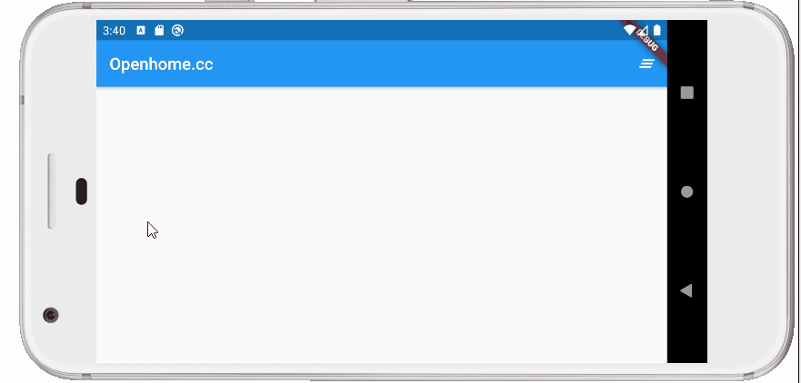

結合事件是繪圖的應用之一，例如，來做個塗鴨板之類，首先設計個 ScratchPainter：
class ScratchPainter extends CustomPainter {
ScratchPainter(this.points);
final List<Offset> points;
void paint(Canvas canvas, Size size) {
var paint = Paint()
..color = Colors.black
..strokeCap = StrokeCap.round
..strokeWidth = 5.0;
for(var i = 0; i < points.length - 1; i++) {
canvas.drawLine(points[i], points[i + 1], paint);
}
}
bool shouldRepaint(ScratchPainter other) => points.length != other.points.length;
}
這邊想設計的塗鴨板，只會將點選或拖曳的每個點用黑線連接起來：
class Scratch extends StatefulWidget {
Scratch({Key key}) : super(key: key);
@override
_ScratchState createState() => _ScratchState();
}
class _ScratchState extends State<Scratch> {
final List<Offset> points = [];
Widget build(BuildContext context) {
return GestureDetector(
child: CustomPaint(
size: Size.infinite,
painter: ScratchPainter(List.from(points))
),
// 收集點選的點
onPanDown: (details) {
setState(() {
points.add(details.localPosition);
});
},
// 收集拖曳的點
onPanUpdate: (details) {
setState(() {
points.add(details.localPosition);
});
}
);
}
}
因為打算設計一個清除按鈕，最簡單的方式，就是重建 Widget 時，一併調整 Element 樹，因此要注意到 key 的設置（參考〈Widget 的 Key（一）〉、〈Widget 的 Key（二）〉）。
接下來就是將元件拼裝在一起了：
import 'package:flutter/material.dart';
void main() => runApp(MyApp());
class MyApp extends StatefulWidget {
@override
State<StatefulWidget> createState() => _MyApp();
}
class _MyApp extends State<MyApp> {
@override
Widget build(BuildContext context) {
// 記得設置 key，Element 樹與 Widget 樹才會有對應的調整
var signature = Scratch(key: UniqueKey());
return MaterialApp(
home: Scaffold(
appBar: AppBar(
title: Text('Openhome.cc'),
actions: [
IconButton(
icon: Icon(
Icons.clear_all,
color: Colors.white,
),
tooltip: '清除',
// 重新建構元件，相當於清除畫面
onPressed: () => setState(() {}),
)
]
),
body: Center(child: signature),
),
);
}
}
class Scratch extends StatefulWidget {
Scratch({Key key}) : super(key: key);
@override
_ScratchState createState() => _ScratchState();
}
class _ScratchState extends State<Scratch> {
略...
}
class ScratchPainter extends CustomPainter {
略...
}
基本上沒什麼太複雜的觀念，然而要將先前學過的東西綜合起來應用，來看看執行的結果：
